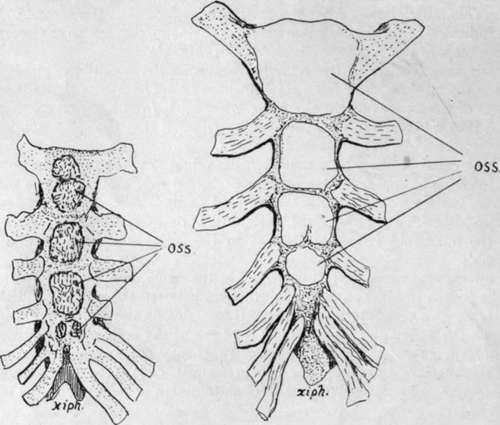

Sternum. Continued
Description
This section is from the book "The Anatomy Of The Human Skeleton", by J. Ernest Frazer. Also available from Amazon: The anatomy of the human skeleton.
Sternum. Continued
Probably these fibrous portions of the pectoral masses account for faint markings that may often be felt on the last segment of the body, frequently suggesting to the touch that there is another dividing ridge extending between the two sixth cartilages. The pseudo-ridge cannot be of the same nature as the other transverse ridges, for these mark the line of junction of the sternebrae, of which each one is developed from distinct centres. The paired centres for the last segment but one appear shortly before birth, and those for the last segment within a year after birth, and no further centres occur in the body, so that there cannot be an additional true transverse ridge. The metastemum commences to ossify some years later than the last segment.
The posterior surface of the body is covered by a very thick layer of vertically arranged aponeurotic fibres, which extend down on to the ensiform process. The layer is not shown in the figure, but it separates the bone from the pleural sacs, whose anterior edges are shown by the interrupted lines. At the margins of the body and xiphoid, from the level of the fourth cartilages downward, the Triangularis sterni is inserted. This muscle arises from the cartilages as far up as the second ; its upper fibres, as indicated in the drawing, are very oblique, becoming less so as they get lower, until it merges into the Transversalis abdominis (Fig. 46).
The Diaphragm arises by two muscular shps from the back of the xiphisternum.
On the manubrium there is no thick membrane. The Sterno-thyroids arise by a curved line of continuous origin along the lower part, from one first cartilage to the other, and they he directly against the bone. Observe that the right muscle as a rule transgresses the middle hne in its area of origin.
The Sterno-hyoids arise by a much smaller origin near the top of the bone. None of these infra-hyoid muscles arise by tendon, so no ridges on the bone mark their situation. The deep layer of the " omohyoid fascia " reaches the bone below the Sterno-thyroids, with the pretracheal fascia, just at or above the angle : the superficial layer of the omohyoid fascia is attached to the upper and back part, above the Sterno-hyoids.
The internal mammary artery is shown in the figure, running down immediately outside the Sterno-thyroids, and giving branches between the muscles and the bone : these branches give vessels into the numerous foramina on the back of the manubrium. Lower down the artery gives branches to the back of the body, and even when it hes in front of Triangularis sterni some smaller twigs may come through that structure. Some of these vessels may pass at once deep to the outer edge of the posterior membrane, but the larger branches appear to pass through foramina of some size in the membrane to get to the bone.
The disposition of the membrane suggests that it is the degenerated remnant of a muscular sheet, of which the upper part only remains now in the infra-hyoid muscles attached to the manubrium.
The sternum consists of a thin shell of compact bone enclosing a coarse cancellous tissue, the meshes of which are filled with red marrow : the other bones of the thorax, ribs and vertebras, also contain red marrow.
The male sternum is longer in proportion to its breadth than the female bone : the difference in length is mainly in the body of the bone, the female body being less than twice the length of the manubrium, while in the male it is more than twice the length, but part of this difference depends on the fact that the male manubrium is on the whole somewhat smaller proportionately than in women.
The bone slopes slightly forwards as well as downwards in the body, forming with the vertebral column an angle of 20 to 25 degrees, so that the antero-posterior depth of the chest is considerably greater at the lower end of the sternum than at the level of the manubrium, in accordance with the position and shape of the heart and pericardium. Although it is covered by the great pectoral muscle in the greater part of its extent, yet, as this muscle is thin on the bone, the sternum is practically palpable from the surface over its whole area except on the depressed xiphoid : this lies in the floor of the infrasternal depression. The angle is particularly prominent and marks the level of the second costal cartilages, from which the succeeding cartilages may be counted down ; but it should be pointed out that in some uncommon cases the prominent angle is opposite the third cartilages, the manubrium including what would otherwise be the first piece of the body. It is therefore advisable if, when examining a chest, the angle gives the impression of being lower than usual, to take care to ascertain that the angle is really of the normal type and has the second cartilages opposite it. The abnormality is well known, and is usually considered a reversion to the arrangement normally present in some of the higher monkeys, but we cannot recognise the conditions that are responsible for its occurrence in certain individuals.
The morphological position of the sternum, the value of its various parts, and their correspondence with the different portions of the sternal apparatus in the lower vertebrates, are controversial questions on which little light is thrown by the ontogenetic development of the human bone. Its comparative shortness in man is correlated with other changes in the thorax resulting from the assumption of the erect position.
In its earliest state the sternum is represented by two bars of condensed tissue, the sternal plates, which are continuous with the ventral ends of the upper eight ribs.
Fig. 48.-Showing variations which may occur in ossification. 1 is a sternum at birth : observe the double centre for manubrium and the single one (perhaps fused) for second piece of body. This is practically a normal specimen. 2, from a young child, although there is considerable growth of the whole sternum, does not yet seem to have any centres in the last piece and thus is hardly normal. Observe that the bone is shaped still in cartilage with separated centres-a condition which remains for some years as the centres extend slowly. When there is more than one centre for the manubrium the added centre appears later than the main one ; this applies also to extra centres found sometimes in or between the sternebra.
At this time the ribs are very short, so that the sternal plates are on the ventrolateral aspects of the thorax and separated by a wide interval; the clavicles reach the top of each plate and become connected by a dense " episternal bar," which can therefore be looked on as connecting the two sternal plates as well as the clavicles. The sternal plates come together at their cranial ends about the sixth week, and fuse in a caudal direction. The episternal bar is probably partly included between the cranial ends of the plates, and partly remains as the interclavicular ligament.
As the plates come together chondrification extends into them from the ribs, so that the single sternum is at one stage represented by paired cartilages connected by dense mesenchyme. It is necessary to state that some observers maintain that the sternum arises independently of the ribs.
The mode of origin just described suggests that a presternal structure has been included in the manubrium, but the nature of such a structure remains doubtful: it is interesting, however, to observe that the ossification of this part of the bone is very irregular as to its number of centres, supporting the view that the manubrium is of a compound nature.
The two plates, joined mesially, form the cartilaginous sternum, but their caudal ends do not fuse, remaining as the cartilaginous costal arch. The xiphoid process is a secondary growth backwards from the end of the fused portion. Junction may be incomplete in places, especially in the lower part, so that when ossification occurs there is a corresponding failure in bone formation and a foramen remains in the bone, a condition not uncommon : the xiphoid is frequently perforated.
Ossification begins in the sixth month in the upper end of the cartilaginous sternum and progresses from before backwards by the formation of successive centres in the various segments.
Centre or centres for the manubrium appear sixth month. „ ,, first piece of body seventh month.
„ second „ eighth month.
„ „ third „ ninth month.
fourth ,, during first year.
Thus at birth there are centres present (Fig. 48) above the last segment of the body, but not in that segment.
The centre for the xiphoid appears several years later.
The number of centres for the segments is variable-as a rule one (but often more) for the manubrium, one for the first sternebra, and two for each of the others placed side by side. A single one for the xiphoid.
The course of ossification just described is liable to frequent changes. Beyond the variation in number of the centres for the manubrium, perhaps the most common modification is an earlier appearance of the body centres, so that the last segment has centres at birth, the occurrence of that for the first segment, perhaps, even preceding the centres for the manubrium.
Fusion between the sternebra occurs irregularly, generally progressing from below upwards, occasionally asymmetrically, commencing some years before puberty and being completed about twenty-five. Before it is completed a thin epiphysial plate usually appears for the clavicular facet, and fuses quickly.
The bony ensiform usually unites with the body in middle life, whereas the cartilage of the angle does not ossify, or only does so in advanced years.
Continue to:
- prev: Sternum
- Table of Contents
- next: Chapter IV. Limbs: Upper Limb I. The Limb-Girdles And Skeleton Of The Free Limbs